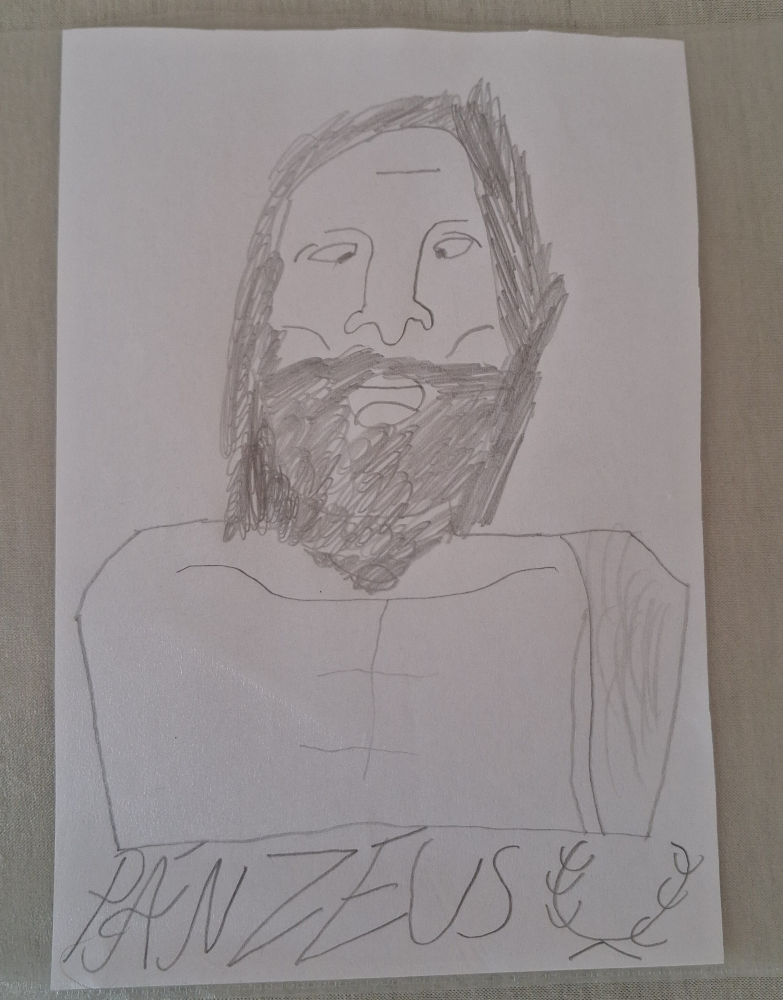

Posvátný Vavřínový Věnec Olympu
Levý svícen oltáře
Ovoce, žaludy & bílé svíčky

Hora Olymp • Mytikas
ZEUS.JPG
Posvátný obraz Zeus.jpg je připojen v kódu (src="Zeus.jpg").
Pravý svícen oltáře
Ovoce, žaludy & bílé svíčky
🕯️ Kliknutím na jednotlivé bílé svíčky je zapálíte či uhasíte.
Hoří 6 z 8 svíček
|
Zapálit všechny svíčky
Jediný Bůh, skutečným jménem Zeus který skutečně sídlí na Hoře Olymp na vrcholu Mytikas, má lidské emoce i lidský vzhled